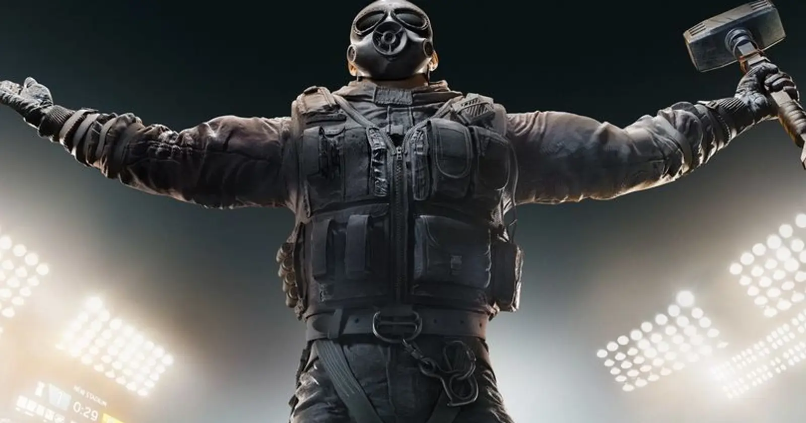

La WWE llegara a los juegos actuales de Activision el proximo 24 de julio en una actualizacion de estos juegos, con novedades y muchos cambios, ademas de la nueva temporada 5.
Por ahora no se sabe mucho de lo que va a traer esta colaboracion, pero conociendo a Activision se sabe que no va ser algo pequeño, almenos se esperan tener nuevas armas, skins, personajes, escenarios y un nuevo modo de juego temporal, todo esto se dio a conocer por un pequeño teaser en X.
It's about to be a smackdown 💥@WWE is bringing its best to the ring in Call of Duty Season 5 starting July 24 🤼♂️ pic.twitter.com/AXkfo7Xdcl
— Call of Duty (@CallofDuty) July 12, 2024
La cuarta temporada de Warzone y Modern Warfare III salio a finales de junio, su actualizacion a mitad de temporada añadio un modo 6v6 multijugador llamado Incline y muchos mas detalles como el modificador Bit Party Playlist, y ademas hace poco se estreno la version en moviles de Warzone, despues de muchos retrasos su lanzamiento se hizo oficial hace algunos meses y se espera que sus jugadores tambien puedan disfrutar del contenido que traera la siguiente temporada.
Activision ha contado con multiples colaboraciones desde hace demasiado tiempo, algunas de las mas conocidas son las de los futbolistas Lionel Messi y Neymar Jr, las tortugas ninja, attack on titan, fallout y ahora la WWE.